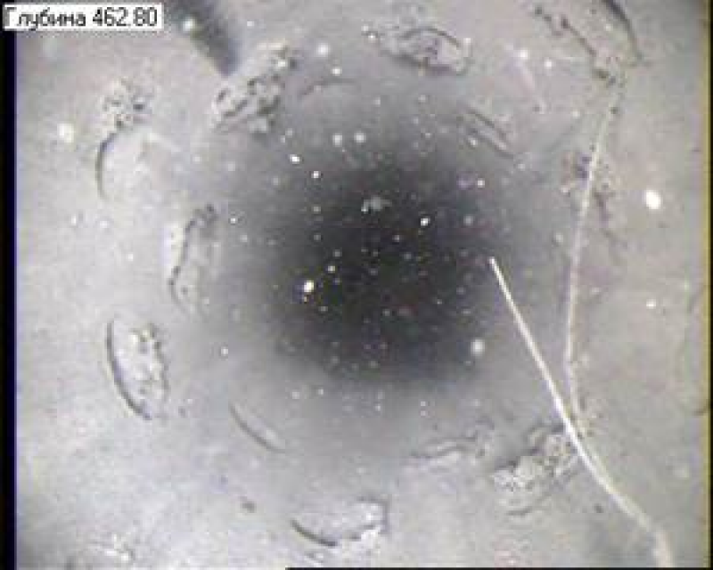

Техническое описание
ПРИБОР ВИЗУАЛЬНОГО КОНТРОЛЯ СКВАЖИН
«КП-511ВК»
Прибор визуального контроля «КП-511ВК»предназначен для визуального контроля технического состояния эксплуатационных колонн, фильтров нагнетательных скважин и области забоя скважин.

2 Технические характеристики
2.1 Прибор эксплуатируется совместно с наземным регистратором «ГЕОФИТ-ВК1110» из комплекта прибора.
2.2 С прибора в наземный регистратор передается видеосигнал цветного или черно-белого изображения, в зависимости от применяемой видеокамеры.
2.3 Прибор рассчитан на применение стандартного трехжильного геофизического кабеля длиной до 500м.
2.4 Прибор обеспечивает видеосъемки заданного интервала видеокамерой с разрешающей способностью 550 TV линий и чувствительностью 0,05 лк.
2.5 Технические характеристики:
2.5.1 Сила света системы освещения не менее 180 кД, степень освещенности объекта регулируется посредством изменения тока светодиодов;
2.5.2 С наземного регистратора могут быть заданы уровень освещения, степень сжатия видеосигнала и частота передачи данных;
2.5.3 Условия работы прибора:
- рабочая температура окружающей среды - минус 10….+60 °С,
- наибольшее гидростатическое давление - 5 МПа;
2.5.4 Напряжение постоянного тока питания прибора - (15 +/-1) В;
2.5.5 Габаритные размеры прибора, мм:
- диаметр по охранному кожуху - 52,
- длина без транспортных заглушек - 964;
- длина с транспортными заглушками - 995
2.4.6 Масса прибора, кг - 7.
Программное обеспечение, поставляемое с регистратором «ГЕОФИТ-ВК1110», позволяет:
- Проводить регистрацию данных, поступающих с прибора в цифровом виде на персональный компьютер;
- Управлять режимами работы прибора;
- Проводить привязку изображения к глубине с точностью не хуже +/- 0.1м;
- Декодировать данные, поступающие с прибора, и восстанавливать изображение исследуемого интервала;
- Осуществлять просмотр и преобразование ранее сохраненных данных.
Прибор имеет Декларацию о соответствии ЕВРОАЗИАТСКИЙ ЭКОНОМИЧЕСКИЙ СОЮЗ ЕАЭС N RU Д-RU.ГА05.В.03603/19
Разработчик – изготовитель: ООО «АСУ-ЭКСПЕРТ»,
634061, г. Томск, ул. Красноармейская, д. 51/1, оф.1.
Зам. директора по геофизической аппаратуре Журиков С. А:
Моб. +7 913-820-4176; т/факс (382-2) 52-37-02; E-mail: GurikovSA@asu-expert.ru